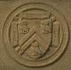

Welcome to the Army Conference on Applied Statistics at Rice
University
Our goal during this week is not only to bring forth
interesting and valuable information for your digestion, but also to show you a
little bit of Houston. This page includes some information about restaurants for
all price ranges, things to do in the Rice area and beyond, and maps to get you
there. If there is any other information or help that you need, please contact
us here at 713-348-6032, or send email to stat@stat.rice.edu.
General Information about the Army Conference
(speakers, etc.)
Conference Information Provided by the Army
Map of
Rice and Maps to
Rice
Link to the
Online Rice Walking Tour
Restaurants
Museums,
Galleries, Parks and Tourist Attractions
Back to the Statistics Home
Page